Trending
Oprah Drops 60 Pounds After Dr. Oz Reveals The Real “Baking Soda Dose”
The episode of The Oprah Podcast was taken down three times in one week — each time after calls from Eli Lilly, the pharmaceutical giant behind Mounjaro. In it, Oprah and Dr. Oz exposed why so many women can't lose weight no matter what they try, and revealed the simple “Baking Soda Dose” Oprah says helped her lose 60 pounds.

Ariana Brockington
Trending News Reporter
In the recording studio of The Oprah Podcast, Dr. Oz showed Oprah something the weight-loss industry didn't want made public — and the episode was taken down three times in one week.
Pay very close attention to what I'm about to reveal — because what happened in the recording studio of The Oprah Podcast last Tuesday was never supposed to air.
And it almost didn't.
What you're about to read is an excerpt from an episode that has already been taken down three times in the past week — each time after calls from Eli Lilly, the pharmaceutical giant behind Mounjaro.
The reason? Oprah and Dr. Oz exposed something the weight-loss industry doesn't want you to discover:
That the reason you can't lose weight — no matter how many diets you try, how many hours you spend at the gym, or how many Ozempic pens you use — has nothing to do with willpower.
It has to do with 2 hormones your body stopped producing.
But before I explain the science behind this — and show you why a baking soda trick, in the right ratio, is helping ordinary women lose 15, 30, and even 60 pounds — you need to understand what happened in that studio.
Because what Dr. Oz placed on the table, right in front of the cameras, made Oprah cover her face with both hands.
And just a few hours later, the episode was taken down.
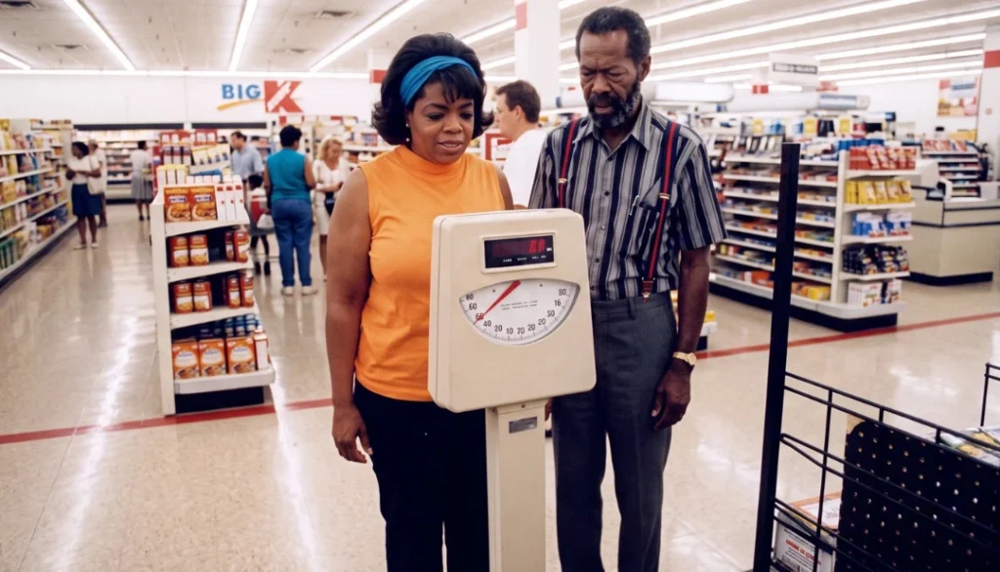
Oprah says her 40-year battle with weight began on a scale at Kmart, when her father told her she would “always be big.”
At 8 years old, a scale in a Kmart aisle marked the beginning of a battle the talk show host would spend four decades trying to understand — and overcome.
In the studio of The Oprah Podcast, the question came out before Dr. Oz even had a chance to respond:
“What is wrong with me, that I can be successful at so many things but still cannot beat this?”
She was not reading from a script. She was talking about something she had carried with her since childhood.
“For as long as I can remember, my weight has been a source of shame for me. I remember the first time I felt it. I was standing on a scale at Kmart when my father walked by and said: you don't even need to weigh yourself, because you know you're going to be big. No matter what you do, you're always going to be big. And I carried that moment with me for my entire life.”
What came next wasn't any easier.
“I was publicly humiliated for practically my entire career because of my weight. For 25 years, making fun of my weight became a national sport.”
And throughout all those years, Oprah believed what millions of women still believe today: that it was her fault.
“I thought I couldn't lose weight because I didn't have enough discipline or willpower. I always thought it was my fault, that I simply wasn't capable.”
That's why, more than 20 years ago, she turned to Dr. Oz. He doesn't hide what happened.
“You were one of the most difficult cases I ever had. There were moments when I thought you might never truly be able to lose weight. And that frustrated me too, because I could see how much shame and sadness it was causing you.”
Oprah tried everything. Including the injections that promised a miracle.
“I also lost a lot of weight with it, and I felt incredible. But the moment I stopped, every pound found its way back, and then some. I think that's the cruelest part about these injections. They work like magic while you're taking them, but they were never meant to last forever.”
Until, in the episode that almost never aired, the answer finally came.
It wasn't her fault. It wasn't a lack of willpower. It was biology.
And for the first time in 40 years, Oprah finally understood why so many of her previous attempts had ended exactly the same way. And what she would need to do to change everything.
But if Oprah's story were the only one, you might think: “It's easy for her. She has money, access, and resources.”
The problem is that another woman joined the conversation live — a woman who had also spent a fortune on doctors.
And she was falling apart too — except no one knew it.
That woman is Kelly Clarkson.
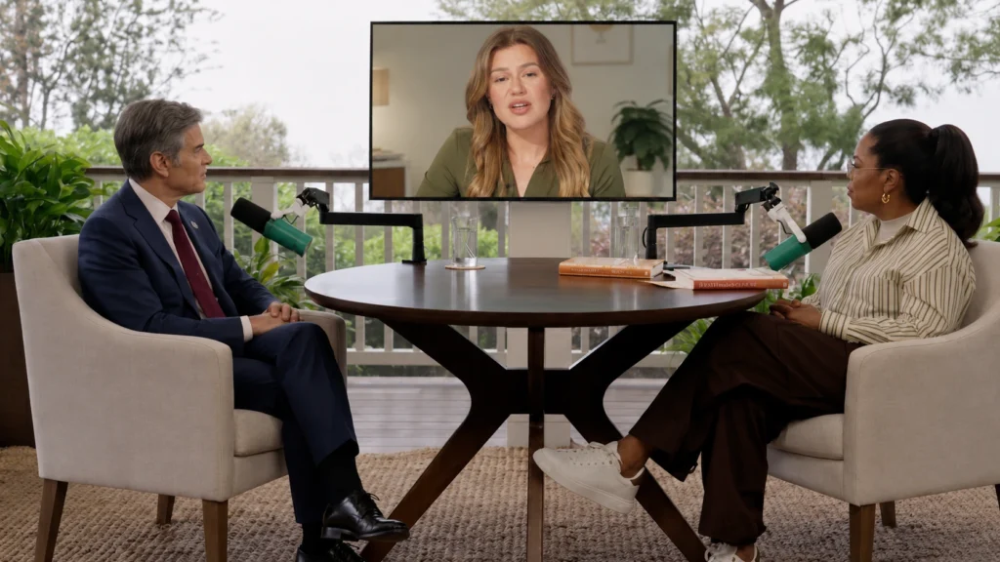
Kelly Clarkson joined the conversation live from home, without heavy makeup and without her stage smile, to talk about what happened after she didn't recognize herself on a TV monitor.
At 38, one of America's most recognizable voices looked at a TV monitor and didn't recognize the woman staring back at her. What happened in the months that followed — betrayal, divorce, 203 pounds, and $50,000 spent on failed treatments.
Kelly appeared live on the screen from home, without heavy makeup. Without her stage smile. When her video connected, she took a moment before speaking. She still had a hard time talking about what came next.
“It's a day I'll never forget. I was backstage at The Kelly Clarkson Show when I saw myself on one of the monitors. I just froze. I didn't recognize the woman staring back at me. The belly, the double chin, the arms, the rolls on my back. And the only thing I could think was: who the hell is that? I was at the heaviest weight I had ever been, 203 pounds.”
Kelly Clarkson says that while she was smiling onstage, she was falling apart behind the scenes — canceling tours and struggling through her marriage.
What the public couldn't see, she felt every single day.
“For years, I was known as that happy, radiant girl from American Idol. But while I was smiling onstage, I was falling apart behind the scenes.”
And what happened after that moment in the studio, she had never spoken about openly. The worst part wasn't the image on the monitor.
“I was canceling tours, I couldn't do my show properly, but the worst part was when it started affecting my marriage. There were no more compliments, no more desire. He avoided being close to me, and I knew exactly why. I felt like he didn't find me attractive anymore. Then I found out he had cheated on me with my own personal assistant — a woman my age, but much thinner and more attractive than me. After that, in 2020, he filed for divorce. I was left alone, weighing 203 pounds with 2 young children to raise, filming a TV show every week and having to go onstage smiling as if nothing was wrong. On the outside, I was Kelly Clarkson. On the inside, I was falling apart.”
Kelly Clarkson says that after the divorce she was left alone, weighing 203 pounds with two young children to raise.
She had hit rock bottom. And still, she didn't give up.
“I was literally at rock bottom, Oprah. After that, I tried everything I could to lose weight. I spent $50,000 on 3 different doctors before I found Dr. Oz.”
The first doctor charged $15,000 and recommended intermittent fasting.
“I lost 15 pounds in 2 months. But when I started eating normally again, boom! 20 pounds came back in just 3 weeks.”
The second charged $12,000 and recommended keto.
“I lost 20 pounds in 6 weeks. But when I started eating carbs again, I gained it all back — plus an extra 10 pounds.”
The third was the most expensive: $23,000. And the solution came in the form of an injection pen.
“He recommended Mounjaro. And it worked. I lost 45 pounds in 2 months. But when the injections stopped, all the weight came back in just 2 weeks. It was like my body had a memory.”
Total spent: more than $50,000. Result: heavier than when she started.
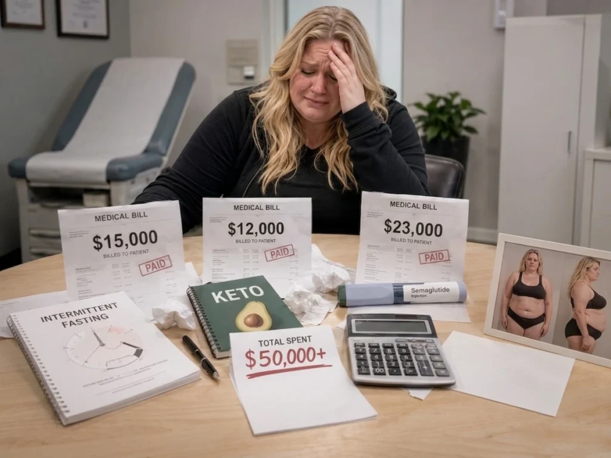
In total, Kelly says she spent more than $50,000 on 3 different doctors — and ended up heavier than when she started.
That was the moment Oprah, who had experienced the exact same frustration, made a call.
“And that's when you came into my life, Oprah. You saw everything I was going through and told me I needed to meet Dr. Oz. When I finally met him, he showed me something that changed everything I thought I knew about weight loss: the baking soda trick.”
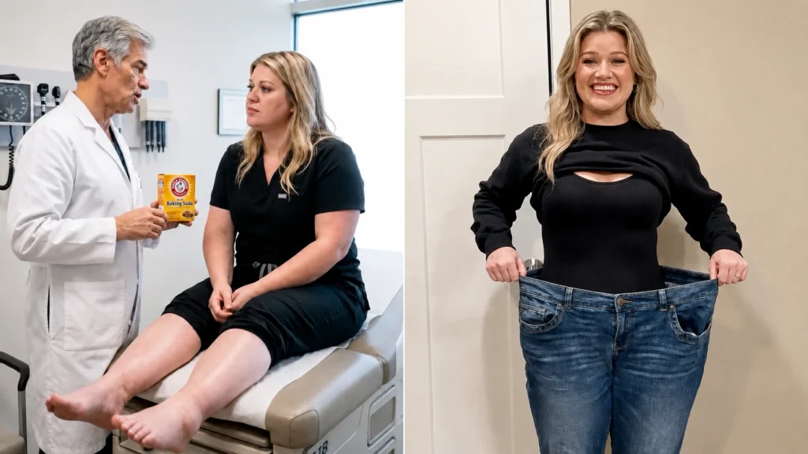
Kelly says it was Oprah who introduced her to Dr. Oz — and to the “baking soda trick” that changed everything she thought she knew about weight loss.
But before revealing what Dr. Oz showed Kelly — and why something finally worked — you need to understand why the $50,000 she spent failed.
And why millions of women are failing in exactly the same way without even realizing it.
When Kelly finished explaining everything she had tried — fasting, keto, and Mounjaro — Oprah asked the question millions of women would have asked at that moment:
“How were we able to lose so much weight with the baking soda trick and keep it off, when Kelly spent $50,000 on doctors and none of those methods could do that?”
Dr. Oz didn't hesitate.
“These solutions work, Oprah. But not in the long run. You lose weight at first, but you'll never be able to keep it off for the rest of your life.”
And then he broke down, one by one, the methods Kelly — and millions of women — had already tried.
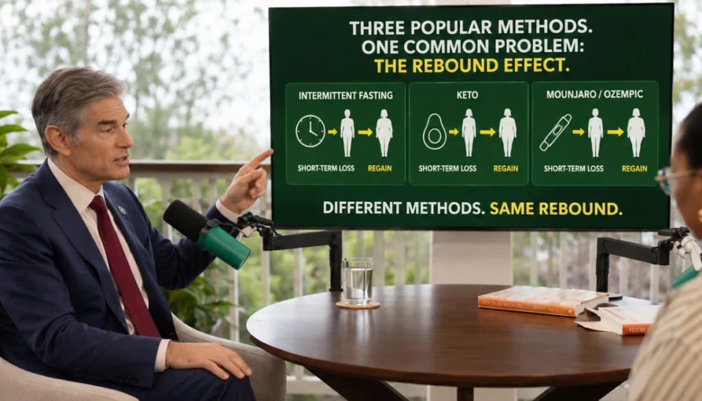
Dr. Oz broke down, one by one, the methods Kelly and millions of women had already tried — and why each one of them ends in the same rebound.
With intermittent fasting, the problem was the rebound.
“The problem is that it slows your basal metabolic rate and makes your body burn fat less efficiently. That's why some people can eat a lot and stay thin, while others gain weight on much less food. In Kelly's case, when she went back to eating normally, her slower metabolism made it easier for her body to store fat.”
With keto, the same thing happened.
“Keto eliminates carbohydrates and changes the way your body responds to insulin — the hormone that helps your cells turn glucose into energy. After going a long time without carbs, when you start eating them again, your body doesn't respond the same way, and that metabolic rebound happens. To avoid it, you'd have to spend the rest of your life without bread, pasta, cereal, pizza, or cake.”
But it was with the injections that Dr. Oz revealed the most important piece of the puzzle.
“Mounjaro, Ozempic, and these injections really do work. And the reason is simple: they provide the body with synthetic versions of 2 hormones, GLP-1 and GIP, that are essential for weight loss. That's the secret behind these injections.”
But then came the problem no one was talking about.
“The problem is that these injections provide synthetic versions of the hormones instead of stimulating your body's natural production. Your body thinks: why should I produce GLP-1 and GIP if they're already coming in every week? While you're using the injection, you lose weight. But when you stop, your body isn't producing those hormones the way it did before — and then the rebound effect hits, exactly like what you and Kelly went through.”
And the rebound isn't the same as it was before. It's worse.
“According to a study published in Nature Medicine, after you stop taking GLP-1 medications, losing weight becomes up to 5 times harder than it was before you ever took the medication.”
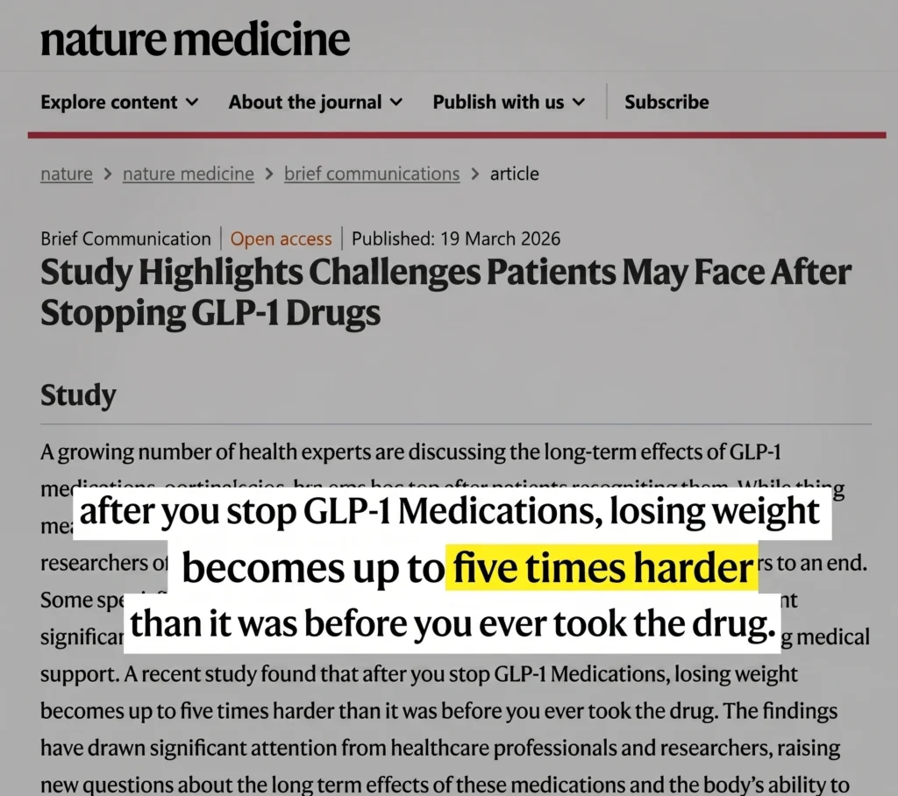
According to a study published in Nature Medicine, losing weight after stopping GLP-1 medications can become up to 5 times harder than before.
Oprah asked the question millions of women are asking:
“To avoid the rebound effect, couldn't we just keep using the injections for the rest of our lives?”
Dr. Oz's answer left the studio silent.
“That's the trap millions of women are falling into, Oprah. They think they can simply keep taking GLP-1 medications forever. But these injections come with a long list of side effects, especially for older women — nausea, vomiting, constipation, hair loss, and loose skin, along with more serious risks.”
And for women over 60, the risk is even greater.
“Your body has already been through menopause, your hormonal system is more fragile, and forcing synthetic hormones into the body makes the rebound significantly worse. The risks are serious.”
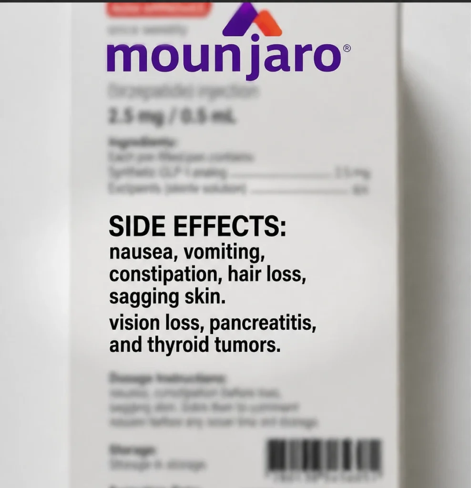
For women over 60, Dr. Oz says the risks of forcing synthetic hormones into a more fragile hormonal system are even greater.
That was the moment Oprah asked the question that would change everything.
“So being overweight and carrying all this accumulated fat has nothing to do with a lack of willpower or discipline?”
The answer came without hesitation.
“It never had anything to do with that. No one simply wakes up one morning and decides to be overweight. It all comes down to biology — specifically, hormonal biology.”
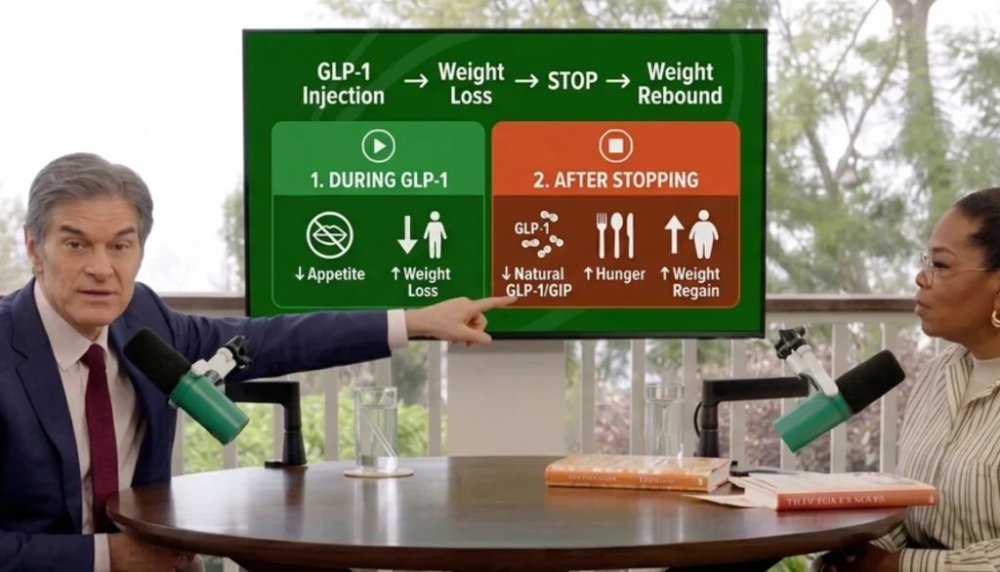
Dr. Oz explained that the real problem wasn't willpower — it was 2 hormones, GLP-1 and GIP, that the body stops producing, especially after 60.
“That's the real secret. The root of the problem isn't what you eat or what you do. It's what your body stopped producing: the hormones GLP-1 and GIP. When they aren't working properly, your body keeps storing fat no matter how many diets, fasts, or workouts you try. For more than 20 years, I recommended all of those methods to my patients — until I realized we were trying to fix the wrong problem.”
Oprah listened to that and, for the first time in 40 years, understood that it wasn't her fault.
But then came the question: if the body had stopped producing those hormones, how could you get it to start producing them again?
According to Dr. Oz, the answer was in the gut. And it started with something Oprah's grandmother always kept in the pantry.
Dr. Oz had spent months studying dozens of articles from the National Library of Medicine. And then he found it.
“Well, after reviewing dozens of articles, we found a study published in JAMA showing the potential of one compound. In high concentrations, working together with 3 other ingredients, it makes your body produce GLP-1 and GIP naturally and at accelerated levels. It's baking soda!”
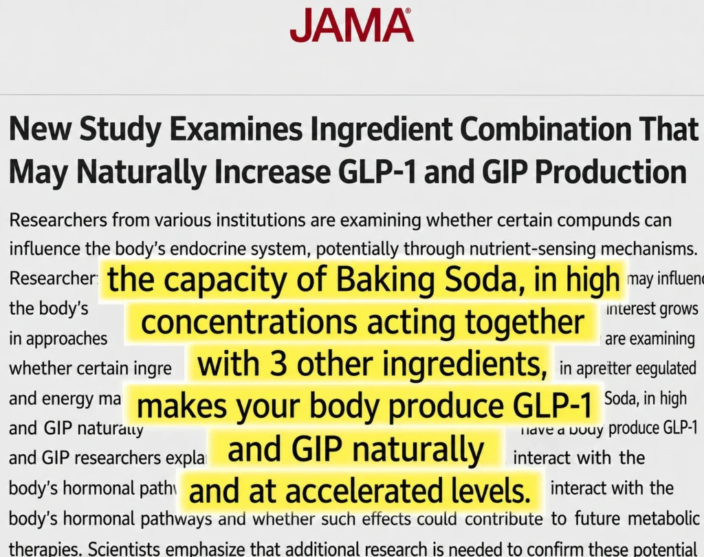
After reviewing dozens of articles from the National Library of Medicine, Dr. Oz found a study published in JAMA showing the potential of one common compound: baking soda.
Oprah paused. Blinked. Then she remembered.
“Interesting! I remember my grandmother always kept a box of baking soda in the pantry. She used it for everything — heartburn, indigestion, bloating, even whitening teeth and freshening up the whole house. But I never imagined it could actually help someone lose weight. How does it work, Dr. Oz?”
The answer involved something no diet, fasting protocol, or injection had ever addressed: the pH of the gut.
“Baking soda, in high concentrations, reduces acidity in the gut and helps bring it to the ideal pH needed to stimulate the receptors that produce GLP-1 and GIP. Instead of artificially replacing these hormones, it helps the body start producing them again on its own, increasing satiety and activating natural fat burning.”
Oprah immediately made the connection.
“So the gut needs the right pH to produce GLP-1 and GIP.”
And then he said: let's go to the kitchen.
“Exactly. Let's go to the kitchen for a demonstration.”
Dr. Oz placed two identical containers on the table. Both contained what he called “intestinal fluid” — a representation of what is currently inside the body of someone who struggles to lose weight.
“Take a look at these 2 containers. They represent intestinal fluid. As the years go by, especially after 60, the gut can become increasingly acidic. This is the kind of environment we see in people who have difficulty losing weight.”
Oprah leaned closer. And she was shocked.
“Wow. I had no idea it could get to this point. Look at the color of that — it's yellow, almost green. It looks like it's gone sour.”
“That's right. This yellowish-green, acidic fluid shows that the gut is outside its ideal pH range. If you're dealing with constant bloating, fatigue, and difficulty losing weight, it's almost certain that the fluid in your gut looks exactly like this.”
Then he dipped two pH strips — one into each container. Both turned red.
“Red means dangerously acidic, exactly the kind of unbalanced environment where your fat-burning hormones cannot be produced.”
“But now watch what happens when we add baking soda to one of these intestinal fluids.”
He poured the powder into one of the containers. What happened next left Oprah speechless.
“This is the alkalization I was talking about. Look at what's happening. The baking soda is neutralizing the acidity in the gut and bringing it back to its ideal pH.”
He dipped the pH strip again. This time, it turned green.
“Now the pH is balanced. In this environment, the intestinal receptors can start functioning again, and the body can resume its natural production of GLP-1 and GIP, as if you had taken Mounjaro, except in a 100% natural way.”
But Dr. Oz didn't stop there. He wanted to show what this ideal pH did to actual fat. So he added the same amount of body fat to both containers.
In the container on the right — the acidic gut, without baking soda — the fat stayed still. Nothing happened.
In the container on the left — the alkalized gut, with GLP-1 and GIP reactivated — the fat began to dissolve.
“Oh my God! The fat is dissolving! It's literally melting!”
“And that's the secret, Oprah. When the gut reaches its ideal pH, it starts producing GLP-1 and GIP naturally again — and those hormones put the body back into fat-burning mode.”
But there was a problem.
Baking soda alone, in the form most people are familiar with, wasn't enough. To produce the effect Oprah and Kelly had experienced, something more was needed.
It required a combination. Four ingredients, in precise ratios, working together.
Dr. Oz called it The Metabolic Transformation Cascade. And he was about to reveal each one.
“The effect only happens when these 4 ingredients are combined in their purest, most concentrated forms, in the exact proportions. That's what we call the Metabolic Transformation Cascade.”
He then revealed, one by one, the four compounds that, together, replicate the effects of weight-loss injections — without needles, without synthetic hormones, and without side effects.
The first and most powerful ingredient is Pure Baking Soda — the Igniter.
“Pure Baking Soda, in high concentrations, has the remarkable ability to reduce acidity in your gut so it can reach the ideal pH needed to stimulate the production of GLP-1 and GIP, signaling your body to enter fat-burning mode.”
The second is Pure Berberine — the Silent Accelerator.
“Pure Berberine is the silent accelerator. It acts as an amplifier for the GLP-1 and GIP hormones, intensifying their fat-burning effects. Think of your metabolism like a furnace: Pure Baking Soda lights the fire, and Pure Berberine is the gasoline that makes those flames explode, burning fat much faster.”
The introduction of the third ingredient was the moment Dr. Oz paused and looked at Oprah seriously.
And he revealed something almost no doctor mentions when talking about weight loss: the gut of women over 40 isn't just acidic. It's inflamed.
The third ingredient is Concentrated Gingerol — the Guardian.
“The 3rd ingredient is Concentrated Gingerol, the guardian of the entire transformation. There's no point in activating all these hormones if silent inflammation in your gut is blocking everything. After menopause, this gut inflammation begins sabotaging your metabolism, blocking the production of the GLP-1 and GIP hormones that keep your body burning fat.”
“Concentrated Gingerol works like a natural cleanser, helping reduce this inflammation and keeping the hormone receptors functioning without interference.”
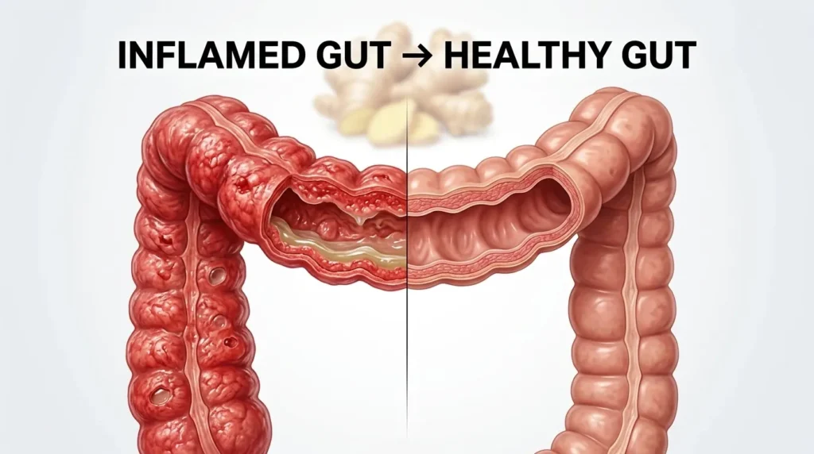
Concentrated Gingerol works as the guardian of the transformation, reducing the silent gut inflammation that sabotages the metabolism after 40.
And there was one side effect Dr. Oz highlighted:
“And here's the most powerful part: this combination is the only one that prevents the dreaded rebound effect. It's almost as if it creates a metabolic memory, keeping the gut in the right condition so the body stays lean even after you reach your ideal weight.”
The 4th and final ingredient is NAD+ — the Preserver.
“It's here for one very clear reason, Oprah. The first 3 ingredients take care of the weight loss. But there's one problem many women fear when they lose weight quickly: loose skin.”
Oprah recognized it immediately:
“That's the famous Ozempic face everyone keeps talking about, right?”
“Exactly, Oprah. After menopause, natural collagen production declines. And when you lose a lot of weight quickly, the skin can't bounce back into place — leaving it loose around the face, neck, and arms.”
“NAD+ doesn't just help keep the skin firm while the fat melts away — it literally repairs your skin cells from within, naturally stimulating collagen and elastin production. It's as if, while you're losing weight, your body is undergoing a rejuvenation treatment at the same time.”
“The idea is simple: lose the weight without leaving your appearance behind.”
Dr. Oz summed it all up in one sentence:
“Pure Baking Soda reactivates the production of GLP-1 and GIP and switches your fat-burning system back on. Pure Berberine amplifies those hormones and accelerates fat burning. Concentrated Gingerol reduces gut inflammation and helps prevent the rebound effect. And NAD+ helps preserve firm, smooth, youthful-looking skin as the fat disappears.”
And the result when all four work together:
“Together, they put your body into automatic fat-burning mode, 24 hours a day, 7 days a week, helping eliminate fat from the belly, arms, back, thighs, and even the face. Even while you sleep, your body keeps working for you.”
But there was a problem — and Oprah pointed it out immediately.
If these four ingredients are available in pharmacies and health food stores, why can't people simply buy them and mix them at home?
The answer involved something none of the experts had anticipated: the way the body absorbs — or destroys — the formula before it ever reaches the gut.
Dr. Oz published the discovery on social media. Within 24 hours, it had been shared 100,000 times. What happened next turned the discovery into a ready-to-use formula.
Oprah didn't let it slide.
“So, where can I buy all these ingredients to make the real baking soda trick?”
Dr. Oz got straight to the point.
“Well, that's exactly the problem. These 4 ingredients can be found in specialty stores and compounding pharmacies. But 99% of what's sold is diluted, unstable, or poorly formulated. And for it to work properly, they need to be combined in precise ratios down to the milligram — something most people simply can't do at home.”
But she didn't let the conversation end there.
“So, the people watching us right now can't use this solution at home?”
“Of course they can, Oprah. I found a simple way, without anyone having to spend much at all, so that everyone watching at home can use this formula.”
Oprah wanted to know everything.
“How? Please, tell us everything!”
And Dr. Oz did.
“When my team published the discovery and the evidence, the post exploded — 100,000 shares in 24 hours. That's when Sasaki Labs, a Japanese laboratory specializing in high-purity natural compounds, reached out to us. We combined our discovery with their technology and produced the first samples.”
After the discovery was shared 100,000 times in 24 hours, Sasaki Labs, a Japanese laboratory specializing in high-purity natural compounds, reached out to produce the first samples.
The result was a formula that didn't exist anywhere else in the world.
“We arrived at the final form: a powder containing Pure Baking Soda, Pure Berberine, Concentrated Gingerol, and NAD+, all combined in exact milligram-level proportions. The first and only formula in the world capable of replicating the effects of Mounjaro and Ozempic, but 10 times stronger, in a completely natural and safe way.”
The final form: a powder with the 4 ingredients combined in exact milligram-level proportions — the first formula of its kind in the world.
“This isn't the baking soda you buy at Walmart. It's the combination of Japanese technology and the discovery we just explained. As soon as the first samples arrived, I sent one directly to Kelly and another to you, Oprah.”
Oprah remembered the moment.
“I remember that day. You called me and told me to try it right away. I'm not going to lie: I was skeptical. After so many diets, personal trainers, chefs, and even Mounjaro, could a simple formula really make a difference?”
Oprah continued:
“But I had nothing left to lose, so I decided to try it. I started taking it every night before bed. After just 10 days, my waist was smaller, my clothes started feeling loose, and when I stepped on the scale, I almost fell over: 17 pounds in 10 days!”
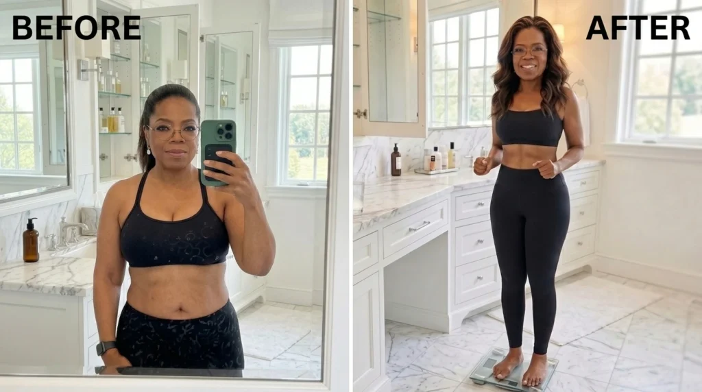
After just 10 days, Oprah says her waist was smaller and her clothes were feeling loose — 17 pounds in 10 days.
But the story didn't end there. What happened in the weeks that followed caught the attention of other celebrities.
“Other celebrities started using the formula — Reba McEntire, Amy Schumer, Jelly Roll, and several others. Word spread quickly, so I decided to bring more samples to some of my patients.”
And that's when he did something no one expected.
He brought two women on live.
Karen — Tulsa, Oklahoma: 300 pounds → 152 pounds lost in 5 months.
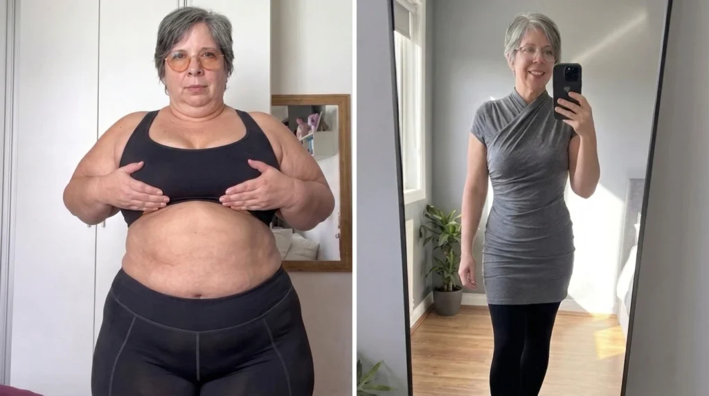
Karen, from Tulsa, Oklahoma, says she went from 300 pounds to losing 152 pounds in 5 months after doctors had told her weight loss would be practically impossible because of her thyroid.
“At my heaviest, I weighed around 300 pounds. My self-esteem was shattered, and I felt ashamed every time I looked in the mirror. For years, doctors told me it would be practically impossible to lose weight because of my thyroid. Then I started using the baking soda trick. In 5 months, I lost 152 pounds. Today, I feel like a completely new woman — more confident, more beautiful, and more alive. I'm so grateful to Dr. Oz and Oprah for letting me share my story. The baking soda trick changed my life.”
Dr. Oz brought on the second guest.
Linda — Knoxville, Tennessee: 67 pounds lost in 2 and a half months — without changing anything in her routine.
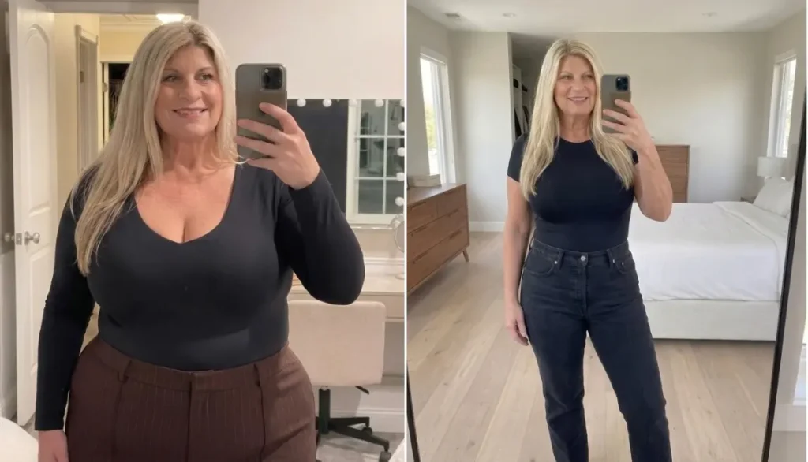
Linda, from Knoxville, Tennessee, says she lost 67 pounds in two and a half months without changing anything in her routine — while working full-time and raising two children.
“I've been using the baking soda trick for 2 and a half months, and I've lost 67 pounds. Before that, I thought losing weight after having 2 children and going through menopause was impossible. My routine is crazy. I work full-time, take care of the house, my children, and my mother. Sticking to diets and exercising regularly simply didn't fit into my life. Even so, I lost 67 pounds without having to change my routine. Today, I feel incredible in my body. And it wasn't just the weight — I got my confidence back and started feeling good about myself again.”
Oprah was speechless.
“And it's not just them, Oprah. More than 115,000 American women have already gotten their bodies and confidence back thanks to the baking soda trick. I receive videos like theirs in my inbox every single day.”
But 115,000 women, Oprah and Kelly, Karen and Linda — still weren't enough for Dr. Oz.
Oprah looked at him and asked the question that thousands of women watching were probably asking too:
“So if a woman at home wants to do exactly what we did... how can she get this formula?”
Dr. Oz smiled.
“That's exactly why we created a ready-to-use version. With the right dosage, the correct milligrams, and the purest, most concentrated ingredients.”
And then he placed a small jar on the table.
After months of testing, concentration adjustments, and scaling up production, the formula was finally ready.
SlimSoda combines Pure Baking Soda, Pure Berberine, Concentrated Gingerol, and NAD+ in a single powder, already measured in the exact proportions.
Finally, a formula that fits into real life:
- You don't need to search for these 4 high-purity ingredients.
- You don't need to make it yourself at home without knowing if it will work.
- You don't need to calculate the proportions.
- One serving. One glass of water. Less than 30 seconds.
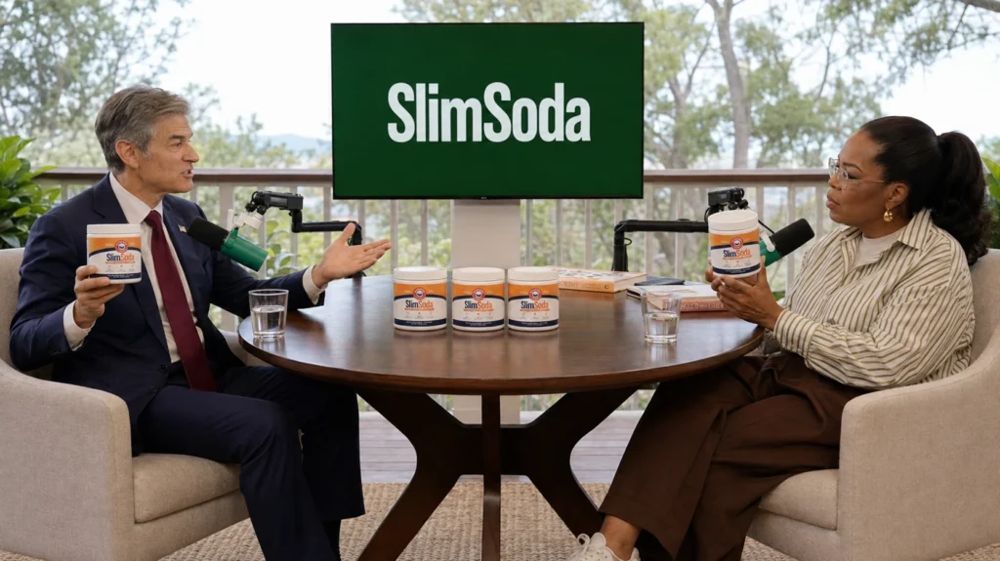
Oprah picked up the jar from the table, turned the label toward herself, and asked: “So everything I was using is in here?”
“So everything I was using is in here?”
Dr. Oz confirmed:
“Exactly. The same combination, except now it's ready for any woman to use at home, without having to go through the entire process we went through during months of testing.”
Oprah looked surprised.
“If that first test-stage powder already helped me lose 60 pounds, this one is much more powerful because it's the final version.”
And that may be one of the most important things about SlimSoda. Because you don't need to reorganize your life to get started.
You don't need to wake up an hour earlier.
You don't need to prepare separate meals for yourself and your family.
You don't need to carry multiple bottles in your purse.
You don't need to spend your evenings calculating calories, macros, or milligrams.
You mix it. You drink it. And you go on with your day.
Before work. After dropping the kids off at school. While making breakfast. Or simply as part of the routine you already have.
For a woman who has spent years hearing that losing weight would require more discipline, more time, and more sacrifice, the idea was exactly the opposite:
Make the process simple enough that she can actually stick with it.
And that's what turned SlimSoda from just a formula tested in a studio… into something that has become part of the daily routine of thousands of ordinary women who want to lose weight without changing their entire lives.
“I used to think I would die fat. At 65, I had been obese for more than 10 years and had completely given up on myself. I tried diets, the gym, fasting, and even considered bariatric surgery. When my daughter told me about SlimSoda, I thought it would be just another empty promise. But deep down, it felt like my last hope. In 3 months, I lost 47 pounds and went from a size XL to a size S. I wore a red dress that had been sitting in my closet for 11 years. My husband looked at me and said, ‘Susan, you look exactly like you did on the day we got married.' I cried that night — but this time, they were tears of happiness.”
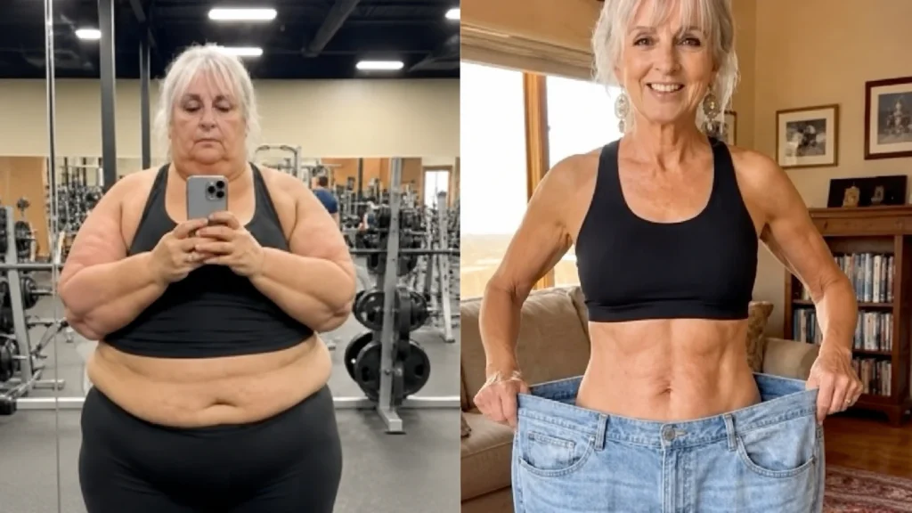
Susan, 65, says she had been obese for more than 10 years and had completely given up on herself before trying the formula. In 3 months, she lost 47 pounds and went from a size XL to a size S.
“After losing weight with Ozempic and gaining it all back, I simply stopped believing. I thought: why try again if it's all just going to come back? Then I saw Oprah using SlimSoda and decided to give it one last chance. In 3 months, I lost 56 pounds. But the most incredible part was what happened afterward: this time, the weight didn't come back. My skin also became firmer. I never imagined I could feel like this again at 45.”
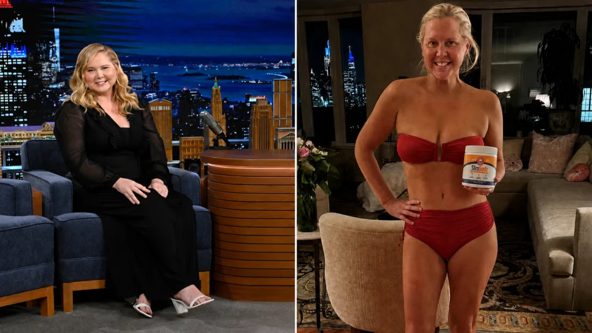
After losing weight with Ozempic and gaining it all back, another reader says she lost 56 pounds in 3 months with SlimSoda — and this time, the weight didn't return.
“I'm 50 years old and a mother of two. For years, I tried to lose weight every way I could — diets, exercise, fasting — but my body just wasn't responding anymore. I could lose a few pounds, but not long after, I would gain it all back. Then I decided to give SlimSoda a try. In less than a month, I lost 38 pounds. But what surprised me most was the bloating — my stomach and my whole body became much less swollen. That constant urge to eat all the time disappeared. After so many years of thinking that losing weight at 50 would be impossible, I finally felt like my body was working with me instead of against me.”
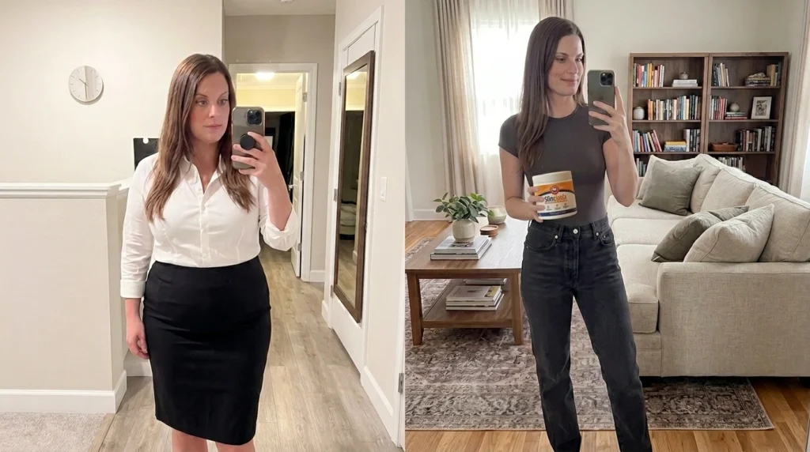
A 50-year-old mother of two says she lost 38 pounds in less than a month — and the constant urge to eat all day simply disappeared.
Turning the formula into something simple to use was only half the job.
Dr. Oz also wanted to make sure that every jar maintained the same purity, concentration, and precise ratios used during testing.
That's why SlimSoda began being produced in a GMP-certified facility, following strict manufacturing and quality-control standards.
FDA-approved quality.
“It wouldn't make sense to create a precise formula and then lose that precision during production. Every batch needs to follow exactly the same standard so every woman can get the same results.”
Every batch goes through purity, concentration, and consistency checks before reaching consumers.
The same formula. The same ratios. In every jar.
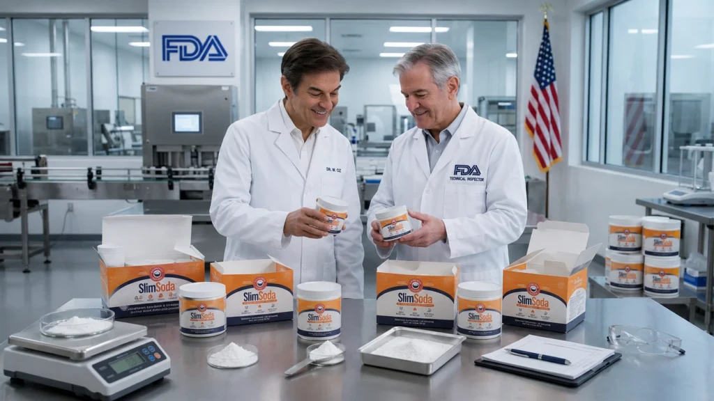
Every batch of the formula goes through purity, concentration, and consistency checks in a GMP-certified facility before reaching consumers.
Close your eyes and imagine: 10 days, 3 months, 6 months from now… using SlimSoda.
The woman you see in the mirror today is not the same woman who will be looking back at you. And the difference starts with a single decision.
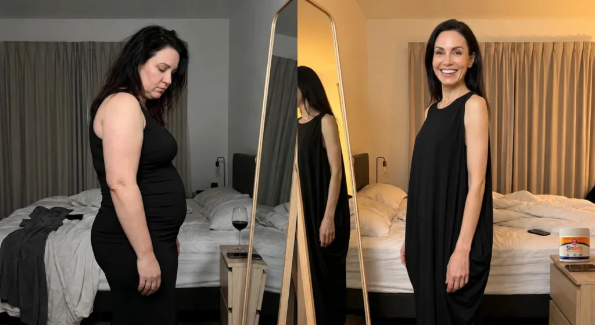
The woman you see in the mirror a few months from now depends on a single decision you make today.
10 days.
You wake up and something feels different. The waistband of your pajamas is loose. You step on the scale and almost fall backward — 6, 8, 10 pounds down.
You look in the mirror and your face looks slimmer. The bloating that greeted you every morning? Gone.
You feel lighter and wake up with an energy you haven't felt in years.
Your husband notices too.
He looks at you for a few seconds and says, “You look different… you look thinner.” And you smile, because this time, you weren't the only one who noticed.
30 days.
The pants you were wearing a month ago are loose. You grab that top you kept in the back of your closet “for when I lose weight” — and it fits. You don't have to suck in your stomach, wear shapewear, or choose the right angle for a photo.
You walk past a store mirror and stop. For a second, you don't recognize the silhouette. It's yours — just slimmer.
You post a photo, and messages from your friends start coming in: “You've lost so much weight!” “What are you doing?” “Tell me your secret.”
3 months.
You open your closet and pull out that outfit that has been sitting there for years. The red dress. The jeans from your college days. The bikini you bought but never wore. They fit.
You take a side-profile photo. No filter. No strategic angle. No sucking in your stomach. And you like what you see.
But the biggest change happens when you realize you've stopped choosing clothes to hide your body.
You walk into a store, try on what you actually like, and for the first time in years, you choose an outfit based on how you want to look — not on what you need to hide.
6 months.
You don't think about dieting anymore. You don't count calories. You don't live with guilt every time you eat. Your body has entered automatic fat-burning mode.
The belly that bothered you for years is smaller. The arms you used to hide don't bother you anymore. You take photos without thinking twice and start liking the woman you see in the mirror again.
And best of all: you don't feel like you're just waiting for the weight to come back. For the first time in a long time, you feel like you're in control.
But that future only exists if you take action now.
The woman you'll see in the mirror 6 months from now is waiting for you to make a decision today. Not tomorrow. Not “after the holidays.” Not “when you have more time.”
Today.
But There's a Reason You Need To Act Fast >>After the first batch was released, 115,000 units disappeared in just 47 minutes.
Demand was so high that women were offering $200, $300, and even $500 for a single jar.
Maria, from Austin, Texas, wrote:
“If you open sales again, I'll buy 6 more jars, even if I have to pay $500 for each one.”
The problem is that SlimSoda cannot be produced continuously.
“Because of the rarity of the ingredients and the difficulty of producing it, we can only manufacture a new batch every 6 months.”
And Dr. Oz released only 500 units of SlimSoda for readers of this article.
That means once this batch is gone, it may take another 6 months before a new batch is ready.
Inventory is updated in real time:
The units available on this page are part of a batch reserved exclusively for readers of this article. Once they're gone, this page will stop accepting new orders.
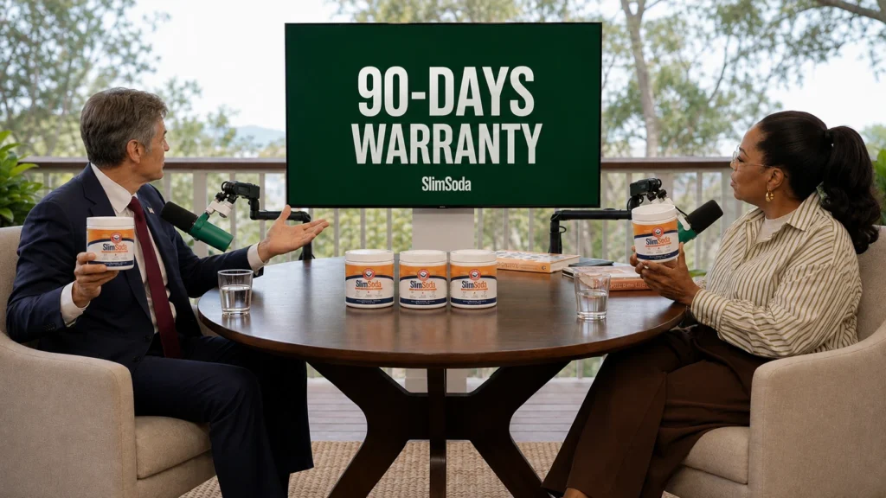
Every order is protected by a 90-day, 100% money-back guarantee.
You'll have a full 90 days to try the formula in your daily routine and see what happens with your weight, your waist, and your energy.
If at any point during that period you're not satisfied with what you see or expected to lose more weight, simply request a refund with 1 click and you'll receive 100% of your money back.
No hassle. No questions. No risk.
In practical terms, you don't have to decide today whether SlimSoda works for you.
You only have to decide whether you want to try it for 90 days without putting your money at risk.
And how much does it cost?
A fair price for SlimSoda, considering the 4 high-purity ingredients and the Japanese technology behind it, would easily be $197 per jar.
But Dr. Oz didn't create this to get rich. He created it to put it into the hands of every woman who needs it.
That's why, exclusively for readers of this article who act now, he released a special discount:
Exclusively for readers of this article, the formula was released at a special price of $19.99 per jar — 90% off — while the current batch lasts.
$19.99 per jar.
That's 90% off — today only, for readers of this site, and only for this batch of 500 units. Once it's gone, the price returns to normal.
Less than what you'd spend on a consultation with a nutritionist.
Less than one week of Ozempic.
Less than a generic supplement that doesn't work.
If there are still units available below, you can secure yours by clicking the button below:
Yes! Secure My SlimSoda At 90% Off >>Still not sure?
Maybe you're thinking:
“What if SlimSoda doesn't work for me?”
That's exactly why you're protected by the 90-day guarantee.
You don't have to believe every word in this article.
You don't have to decide today whether you'll use SlimSoda forever.
You only need to decide whether you want to give your body 90 days to show you what can happen.
If you're not satisfied, simply request a refund and you'll receive 100% of your money back.
The risk isn't in trying it.
The only risk is closing this page, continuing to do exactly what you've already tried before, and a few months from now wondering:
“What if I had tried?”
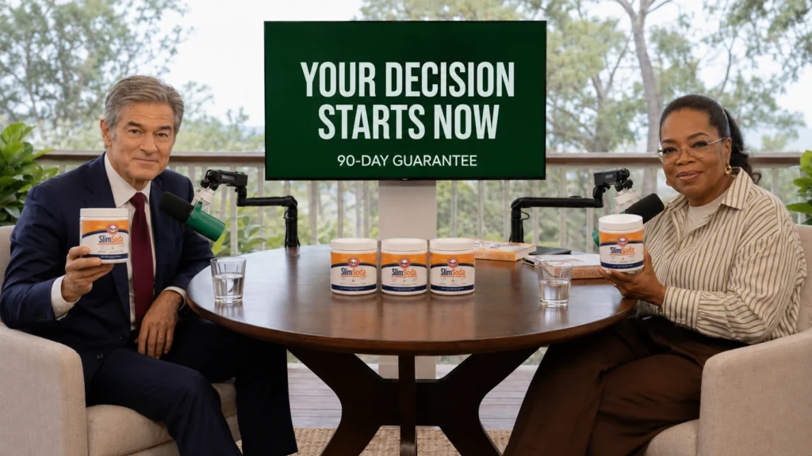
Dr. Oz has already shown the science. Oprah, Kelly, Karen, Linda and Susan have already shown the results. The only thing missing is your decision.
Your decision starts now.
You already know what happens if you keep doing exactly what you've been doing.
The question now is: will you give your body the chance to respond differently?
Dr. Oz has already shown the science. Oprah, Kelly, Amy, Jelly Roll, Karen, Linda, and Susan have already shown the results.
The $19.99 price is already on the table.
The 90-day guarantee already takes all the risk off your shoulders.
The only thing missing is your decision. And it needs to happen now.
You don't have to start a new diet tomorrow.
You don't have to promise yourself you'll never eat the foods you love again.
You just need to take the first step.
If SlimSoda is still available, your 90-day guarantee and promotional price will appear on the next page.
Inventory is limited. The discount is exclusive. And once it's gone, your only option may be to wait months — if the $19.99 price even comes back.
Don't put it off. The units available on this page are part of a batch reserved exclusively for readers of this article, and once they're gone, this page will stop accepting new orders.
Try SlimSoda Risk-Free For 90 Days >>Ariana Brockington is a trending news reporter at TODAY digital. She is based in Los Angeles.


Comments
Thank you, Dr. Oz and Oprah. I honestly thought my body was just done after two kids and turning 50. I started SlimSoda 5 weeks ago and I'm down 24 lbs. My face looks different, my stomach is finally going down, and I have energy again. I cried when I saw an old photo of myself because I finally feel like I'm getting her back. ❤️
Same here, Sarah. I'm 53 and down 19 lbs in a little over a month. My husband noticed before I even said anything. He looked at me one morning and said, "Whatever you're doing, keep doing it." 😂 Thank you Oprah for asking the questions so many of us were afraid to ask.
Dr. Oz, THANK YOU. I had tried fasting, keto, calorie counting... everything. I would lose 8 or 10 pounds and gain it right back. I'm on week 6 with SlimSoda and I've lost 27 lbs. The biggest difference is I'm not fighting hunger all day anymore. I finally feel in control around food.
I have 3 kids, work full time, and I do NOT have time for complicated diets. That's why I tried this. I'm down 18 lbs in 4 weeks and my jeans are already loose. The best part is I didn't have to turn my whole life upside down. Thank you Dr. Oz and Oprah for making this simple enough for normal moms.
Lena, SAME. Three kids here too. I started at 207 lbs and this morning I was 181. My 6-year-old told me, "Mommy, you're faster now," when we ran upstairs. That sentence meant more to me than the number on the scale. 😭
I need Oprah to know how grateful I am for this interview. I felt like she was asking MY questions. I'm 49, in menopause, and had almost accepted that this was just my body now. 33 days later: 21 lbs gone. My husband told me my face looks like it did 10 years ago. I haven't felt this confident in years.
I was skeptical because I've wasted so much money over the years. But I kept thinking about what Dr. Oz explained, so I finally ordered. Day 23 today and I'm down 16 lbs. My belly isn't sticking out the way it used to and I'm sleeping better too. I wish I had started sooner.
Charlotte, keep going. I started at 247 lbs. I'm now 211. I hadn't seen the scale move like this in YEARS. My daughter took a picture of me last weekend and for once I didn't ask her to delete it. Thank you Dr. Oz. Seriously.
Okay... I was 100% sure this was going to be another thing sitting in my cabinet. Nope. 5 weeks in and I'm 26 lbs down. My cravings are so different now. I can actually eat dinner and not spend the rest of the night looking for something sweet. Thank you Oprah and Dr. Oz for sharing this.
I pulled my favorite jeans out of the drawer this morning. The ones I couldn't button for almost two years. THEY FIT. I just stood there staring at myself. My son said, "Mom, you look really pretty today." I'm down 22 lbs so far and that moment alone was worth everything. ❤️
The hunger change is REAL for me. I used to open the fridge 10 times every night. Now I can eat dinner and just... be done. I'm down 17 lbs in a month. I didn't realize how exhausting it was to think about food all day until it stopped.
THANK YOU DR. OZ!!! 31 lbs gone in 7 weeks. I'm 56 and honestly thought I'd never see my waist again after menopause. My sister saw me for the first time in a month and literally said, "What happened to you?!" 😂 I haven't heard a compliment like that in years.
Oprah, if you ever read these comments: THANK YOU. Watching you talk openly about struggling with weight made me feel less alone. I'm 52, mother of two, and I've lost 29 lbs with SlimSoda so far. Yesterday I wore a dress I hadn't touched since 2019.
I'm 61. Down 34 lbs. That's all I really need to say. 😂 My doctor had been telling me for years to lose weight and I just couldn't make anything stick. Now my clothes are loose and my friends keep asking what changed. Thank you Dr. Oz and Oprah from the bottom of my heart.
My before-and-after photos don't even look like the same person. 38 lbs down and still going. But the biggest win? I don't hide when someone pulls out a camera anymore. Thank you, thank you, THANK YOU Dr. Oz and Oprah. You gave me hope when I had basically given up.